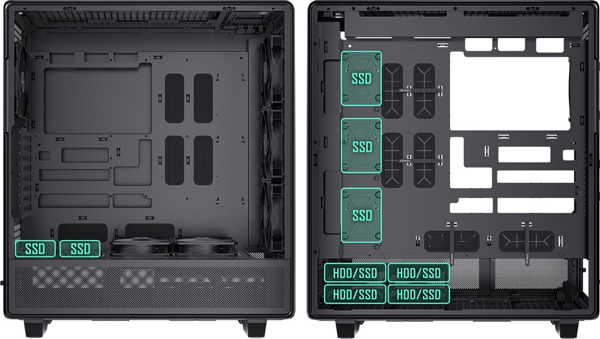

Build team · Project index
Two projects, one team
The same people work on both, in separate lanes: each project has its own budget, plan, bill of materials and research. They stay independent until integration (Phase 3), when Field Unit offloads heavy AI inference to Conductor.
| Doc | BT-IDX |
| Rev | C · 2026-11-18 |
| Owner | Build team |
| Projects | 2 active |
PRJ-01 · CONDUCTORParts decided · ordering
AI orchestration workstation
Single-socket AMD EPYC tower that runs about 14 coding agents concurrently plus local models on an RTX 5070 Ti.

ResearchNov 15
DecidedNov 17
Orderingby Nov 19
Buildnext
16CEPYC 9175F
128GBDDR5 ECC
16GBVRAM, 5070 Ti
15.36TBU.3 NVMe
| Platform | EPYC 9175F · ASRock Rack TURIND8X-2T · SP5 |
|---|---|
| Budget | ≈ $14,037 all-in (Micro Center $9,063 incl. tax + Amazon drives ≈ $4,974) |
| Next | Confirm board's 3× EPS inputs vs PSU's 2× EPS cables; order before price guarantee ends Thu Nov 19. |
| Team | Build team |
PRJ-02 · FIELD UNITHardware owned · access test
Quadruped robot platform
Unitree Go2 X with an add-on Jetson Orin Nano Super, a Unitree L2 3D LiDAR and an SO-101 arm: perception, locomotion and light manipulation.

ResearchNov 18
OwnedX + Jetson
Access testnext
Add-onsthen
67TOPSOrin Nano Super
12leg actuators
8kgrated payload
≈3.5kgadd-ons (est.)
| Platform | Go2 X · Jetson Orin Nano Super 8 GB · Unitree L2 · SO-101 |
|---|---|
| Budget | Robot + Jetson owned · ≈ $1,464 core add-ons (≈ $2,939 with 15 Ah battery upgrade) |
| Next | 20-minute rear-port network test: determine which DDS topics the X exposes to the Jetson. |
| Team | Build team |